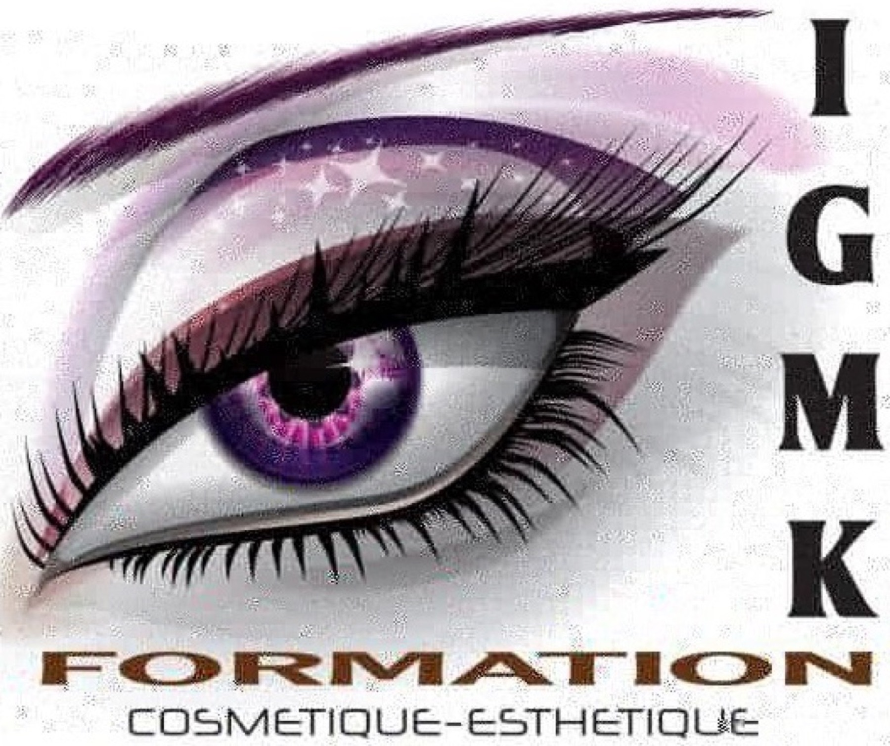

IGMKTrois propositions de couleurs appliquées à tout le site, et la version actuelle pour comparer. Ouvrez une palette, naviguez librement entre les pages (formations, stage, contact, pré-inscription…) : la palette choisie vous suit. Une barre en bas de l'écran permet de changer de palette à tout moment. Pensez à regarder aussi sur votre téléphone.
Lumineux, frais, très « beauté ». Parle directement au public des réseaux sociaux.
Voir le site dans cette palette →Le violet du logo en version claire, avec une touche pêche pour les promotions.
Voir le site dans cette palette →Chaleureux, africain moderne. Le plus proche des tons des photos des ateliers.
Voir le site dans cette palette →La version en ligne aujourd'hui, pour comparer.
Voir le site actuel →Aperçus de travail : seules les couleurs changent, les textes et les photos sont ceux du site actuel. Le logo reste le même dans toutes les propositions.